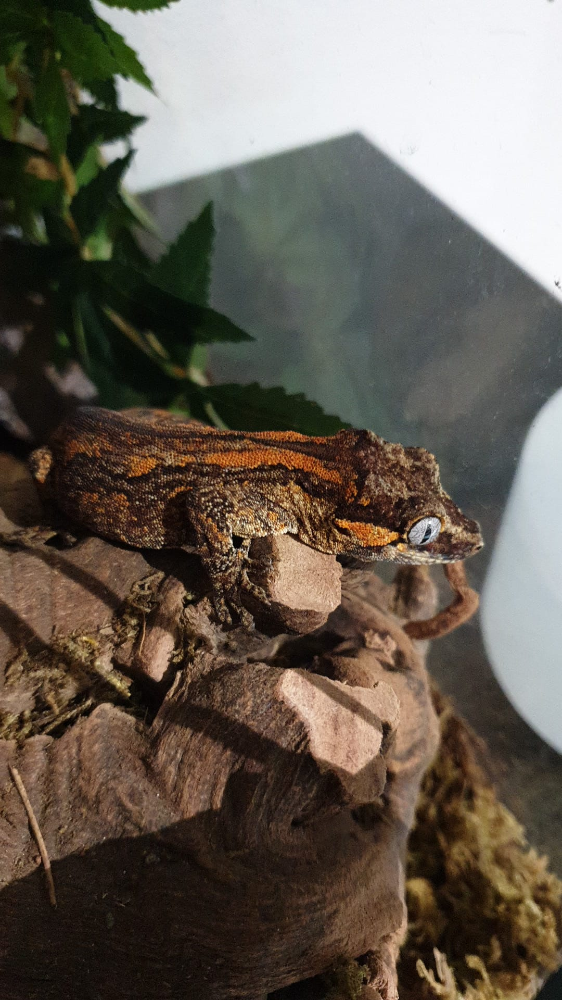

My name is Andrea Prato. I am 21 years old and I am studying computer science in college. I live in Biasca with my parents and my 3 pets. I am a great lover of volleyball, which I practice in my spare time: I play as a wing spiker in a small amateur team called Hikawa volleyball. Another great passion that I have are animals, as already mentioned above at the moment I have 3, one of which is Lampo, my beloved cat of 8 years old. Immediately after he became part of my life, I decided that I would definitely host other animals in the house, but unfortunately, living in an apartment I am unable to take dogs, because they are too noisy. During my long search for animals that I could keep in an apartment my passion took a specific direction: that of reptiles. Reptiles are fantastic, there are all sizes, colors and shapes, they are quiet, and they are very beautiful to look at. My other two pets are also my first reptiles: two gargoyle geckos (R.auriculatus) named Yuki and Echo, but I plan to get many more, including snakes, monitors lizard, axolotl, although technically it's an amphibian and not a reptile, and of course other geckos. I don't dedicate all my free time to volleyball and reptiles, in fact another passion I have, and also one of my biggest vices, is video games. Since I was a child I have always been a lover of them, and it's always thanks to them and to a friend that I approached the world of computer science and that now I'm here to write this text. During the last year I became aware of what would become my favorite game: Hollow Knight, which I highly recommend to anyone who is reading this text. In this little masterpiece impersonate a small insect ghost, who will have to wander the kingdom of Hollownest exploring the beautiful landscapes of the latter and defeating the bosses in order to free him from the disease that infects him. For me, this little game is a perfect mix between a difficult challenge and a relaxing walk: in fact, to overcome all the challenges that this proposes you need an excellent technical ability and a lot of patience, given its enormous difficulty, all this is however compensated by the nice and beautiful graphics and music that the game offers. This is me, and my main passions, thanks for reading :).
